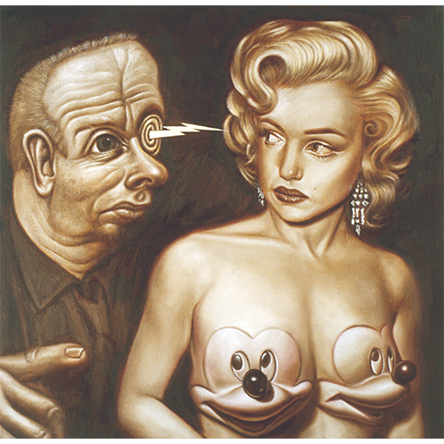
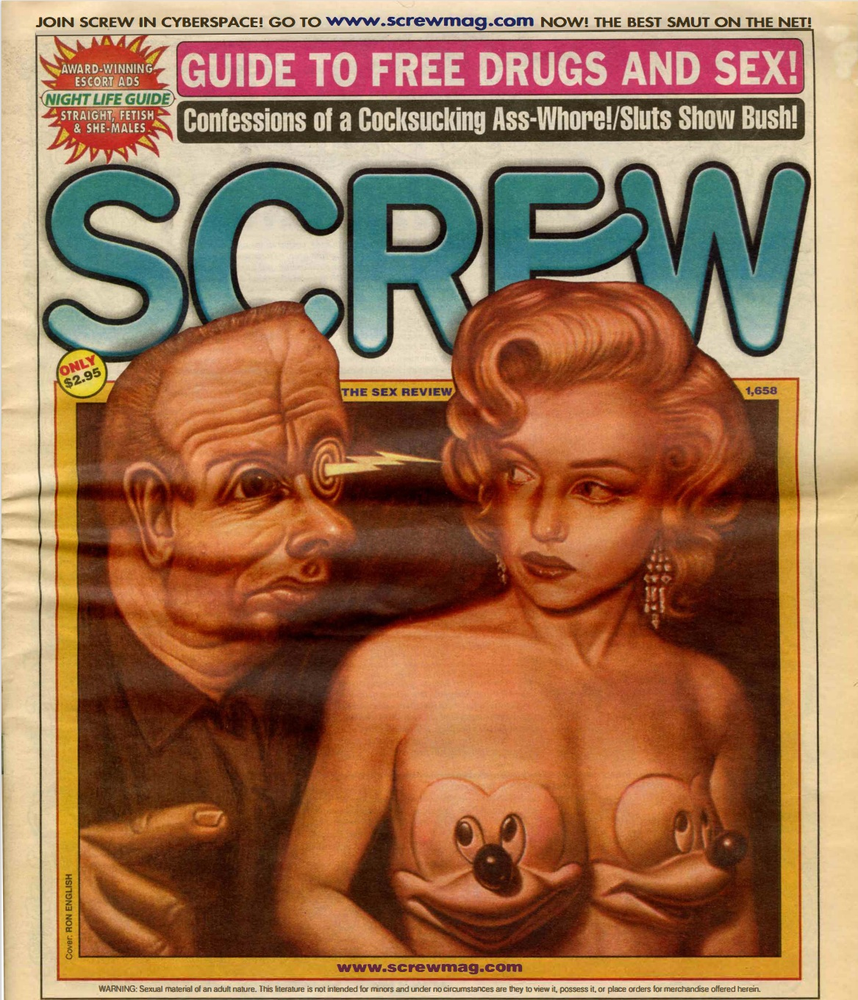
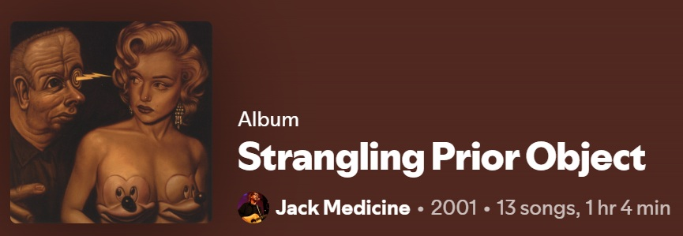
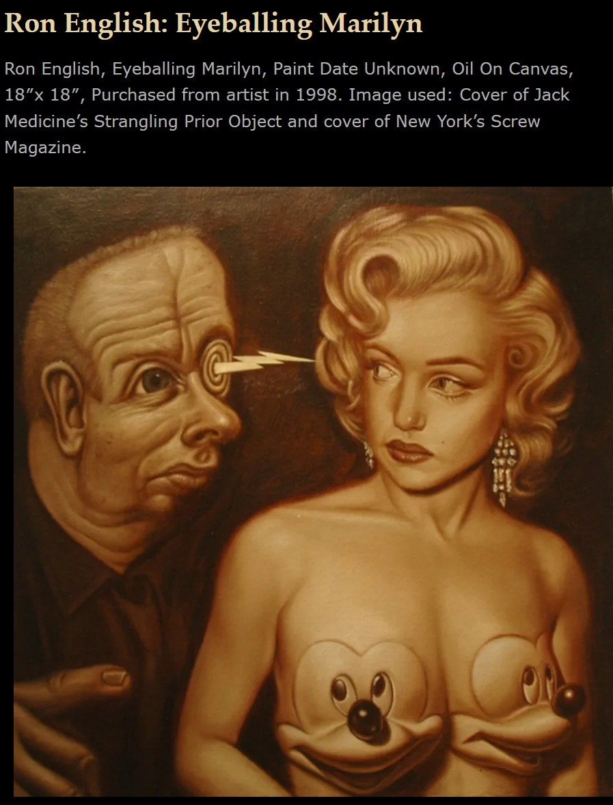

Exhibitions
Popaganda / Rejected II, 313 Gallery, New York, New York, US, February 1–26, 1999.
Literature
Ron English, Popaganda: The Art & Subversion of Ron English (San Francisco: Last Gasp, 2001), p. 108. ISBN 1-887128-60-3.
Screw, no. 1,658 (New York: Milky Way Productions, December 11, 2000), cover illustration by Ron English.
Notes
This work references Mickey Mouse, created by Walt Disney and Ub Iwerks.
This work references Marilyn Monroe.
This work was used as the cover image for Jack Medicine’s album Strangling Prior Object.
This work is reproduced on the cover of Screw, no. 1,658, published December 11, 2000.
The Art & Album Collector’s Blog page for this work lists the dimensions as 18 × 18 inches and states that the painting was purchased from the artist in 1998. This differs from the 16 × 16 inches measurement currently recorded in the catalogue metadata and should be verified before finalizing.
Ancillary Documentation
The following materials document source references, publication use, album-cover use, and selected online documentation for the work.




